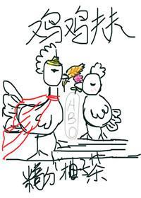

Cuando las gallinas estaban al borde de la extinción, a los gallos les costaba mucho encontrar pareja. Los humanos estábamos a punto de perder pollitos... ¡y huevos para comer!
Pero, por suerte, aparecieron las hormonas ABO. Las generaciones posteriores de pollos pudieron seguir multiplicándose. Los pollos pusieron huevos; de los huevos eclosionaron pollos.
El inútil, flacucho y pequeño pollo Omega no recibió una cálida bienvenida porque le costaba quedar preñado. Hasta que un día conoció a un gallo gordo y ciego.
Posteriormente se convirtieron en el pollo Alfa más guapo del mundo y en el pollo Omega más fértil del mundo.